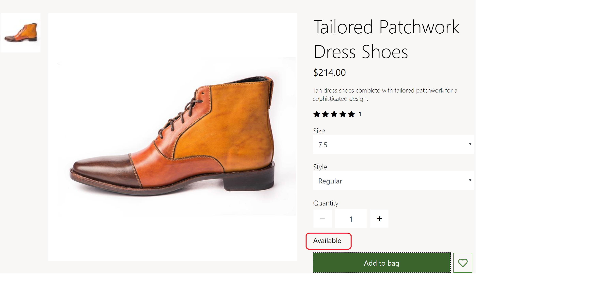

Apply inventory settings
This topic covers inventory settings and describes how to apply them in Microsoft Dynamics 365 Commerce.
Overview
Inventory settings specify whether inventory should be checked before products are added to the cart. They also define inventory-related merchandising messages, such as "In stock" and "Only a few left." These settings ensure that a product can't be purchased if it's out of stock.
Dynamics 365 Commerce provides estimates of on-hand availability for products. For information about how estimated on-hand availability is calculated, see Calculate inventory availability for retail channels.
In Commerce site builder, inventory thresholds and ranges can be defined for a product or a category. They determine whether inventory can be classified as in stock, low stock, or out of stock. For details, see Configure inventory buffers and inventory levels.
Note
Support for inventory thresholds and ranges is available in the Dynamics 365 Commerce 10.0.12 release.
Inventory settings
In Commerce, inventory settings are defined at Site Settings > Extensions > Inventory Management in site builder. There are four inventory settings, one of which is obsolete (deprecated):
Enable stock check in app – This setting turns on a product inventory check. Buy box, cart, and pick up in store modules will then check product inventory, and will allow a product to be added to the cart only if inventory is available.
Inventory level based on – This setting defines how inventory levels are calculated. The available values are Total Available, Physical Available, and Out of stock threshold. In Commerce, inventory threshold and ranges can be defined for each product and category. The inventory APIs return product inventory information for both the Total Available property and the Physical Available property. The retailer decides whether the Total Available or Physical Available value should be used to determine the inventory count and the corresponding ranges for in-stock and out-of-stock statuses.
The Out of stock threshold value of the Inventory level based on setting is an old (legacy), obsolete value. When it's selected, the inventory count is determined from the results of the Total Available value, but the threshold is defined by the Out of stock threshold numeric setting that is described later. This threshold setting applies to all products across an e-commerce site. If inventory is below the threshold number, a product is considered out of stock. Otherwise, it's considered in stock. The capabilities of the Out of stock threshold value are limited, and we don't recommend that you use it in version 10.0.12 and later.
Inventory ranges – This setting defines the inventory ranges that message are shown for on site modules. It's applicable only if either the Total Available value or the Physical Available value is selected for the Inventory level based on setting. The available values are All, Low and out of stock, and Out of stock.
- When All is selected, messages for all inventory ranges, from in stock ("Available" message) to out of stock ("Out of stock" message), will be shown.
- When Low and out of stock is selected, messages for all inventory ranges except in stock ("Available" message) will be shown.
- When Out of stock is selected, only the "Out of stock" message will be shown.
Out of stock threshold – This old numeric setting will take effect only if the Out of stock threshold value is selected for the Inventory level based on setting.
Important
These settings are available in the Dynamics 365 Commerce 10.0.12 release. If you are updating from an older version of Dynamics 365 Commerce, you must manually update the appsettings.json file. For instructions on updating the appsettings.json file, see SDK and module library updates (This is an external linThis link was changed due to HTMLfromRepoGenerator).
Modules that use inventory settings
Buy box, wishlist, store selector, cart, and cart icon modules use inventory settings to show the inventory ranges and messages.
The following image shows an example of a product details page (PDP) that is showing an in-stock ("Available") message.

The following image shows an example of a PDP that is showing an "Out of stock" message.

The following image shows an example of a cart that is showing an in-stock ("Available") message.

Additional resources
Configure inventory buffers and inventory levels